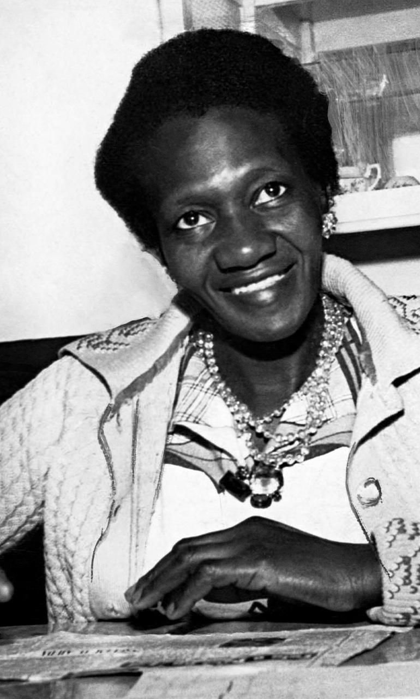
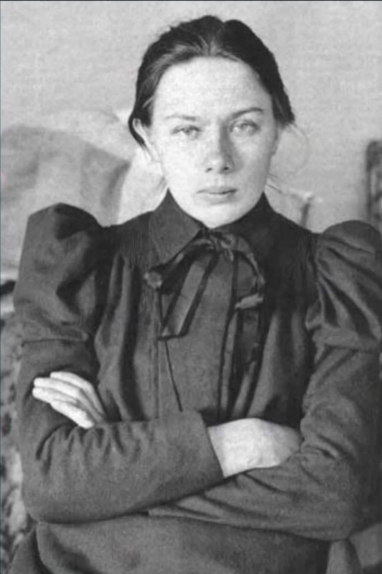
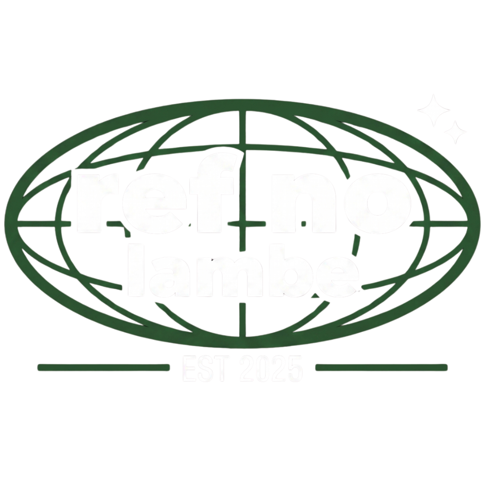

Deslize para o lado para explorar →


Esta iniciativa busca conectar a juventude aos pensadores que moldaram a aprendizagem. Através de lambes urbanos e tecnologia de acesso rápido, resgatamos essas biografias de forma acessível e interativa para todos.